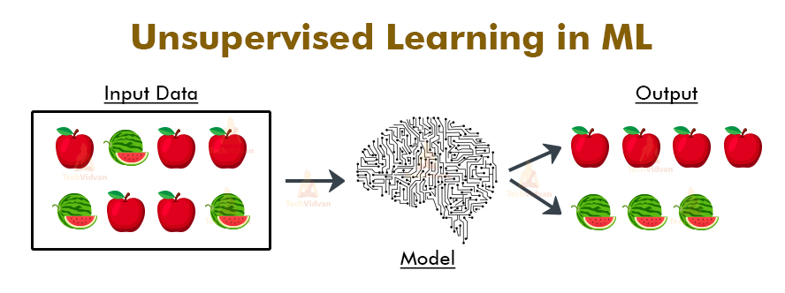

Machine learning is a method of data analysis that automates analytical model building. It is a branch of artificial intelligence based on the idea that systems can learn from data, identify patterns and make decisions with minimal human intervention. And it is obvious that machine learning depends heavily on mathematics and statistics. As it applies a lot of mathematical and statical theories using programming languages such as python (and using a lot of its generous libraries).
Machine learning has three types depending on the data structure fitted to the model and whether it is labelled or not:
- Supervised learning (structured data and labelled).
- Unupervised learning (structured data and unlabelled).
- Reinforcement learning (real time data).

If the data is structured in tables and labelled, it is called supervised learning. In supervised learning, there are a lot of methods used such as linear regression which can predict a value depending on the features of labelled data. there are other supervised learning methods(algorithms) such as (Logistic regression, Naive Bayes, Support vector machine (SVM), K-nearest neighbor, ...)
As a simple example of structured labelled data, we can consider the following table which contains the prices of houses depending on some features:
| Sale Price | Year sold | Size in square feet |
|---|---|---|
| 208500 | 2008 | 8450 |
| 181500 | 2007 | 9600 |
| 223500 | 2008 | 11250 |
| 140000 | 2006 | 9550 |
Unsupervised learning on the other hand is a type of self-organized learning that helps find previously unknown patterns in data set without pre-existing labels. In unsupervised learning algorithms, a model receives a dataset without any instructions. Also, you don’t know exactly what you need to get from the model as an output yet. You might be guessing that there is some kind of relationship between the data within the dataset you have, but the problem here is that the data is too complex for guessing. What will the model do then? Well, in such cases grouping of data is done and comparison is made by the model to guess the output.
